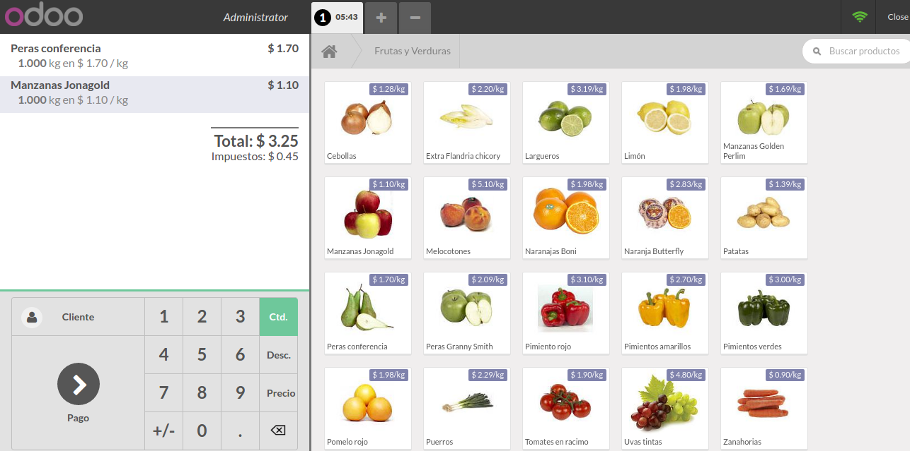

<section class="oe_container oe_dark">
    <div align="left" class="oe_row oe_spaced">    
        <div class="oe_span12">
            <h2 class="oe_slogan text-center">Mexican POS Management System</h2>
        </div>
        <div class="oe_span6">
            <div class="oe_span6 mt16">
                
            </div>
        </div>
        <div class="oe_span6">
            <h2 class="oe_slogan text-left">Diverse options to validate orders</h2>
            <p class='oe_mt32 text-justify'>
            When is generated a new sale from point of sale, the user have three options before to validate the order:
            Not assign customer in the sale, Assign a customer in the sale, Assign customer in the sale and generate the invoice.
            This app add a new button that allow generate the XML files related with the session, after that it is closed.
            The XML file take the data from all orders related with the session.
            </p>
        </div>
    </div>
</section>
